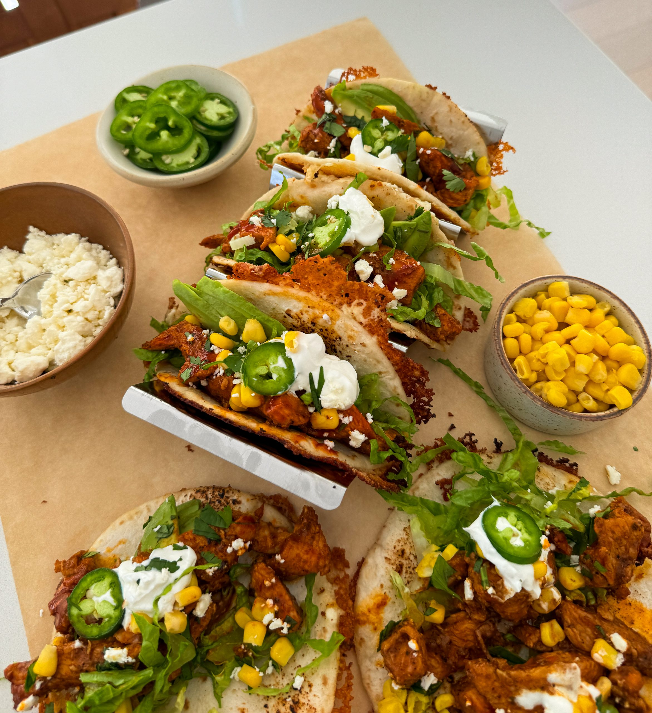

DINNER | MAIN COURSE
SUSHI TACOS
PREP TIME: 30 MINUTES
COOK TIME: 30 MINUTES
TOTAL TIME: 1 HOUR
YIELDS: 12 TACOS
What happens when you combine the crispiness of a
Mexican taco with the flavors of Japanese sushi?
You get the most incredible creation - a sushi taco
- and I'm sure this is what Hannah Montana meant when
she said the best of both worlds. These tacos are the
most delicious fusion twist packed with spicy ahi tuna
and creamy homemade spicy mayo, all nestled in crispy
nori taco shells. It's a fun and flavorful way to enjoy
your favorite sushi but handheld in a seaweed tempura taco!
JUMP TO RECIPE

DINNER | MAIN COURSE
SUSHI TACOS
What happens when you combine the crispiness of a
Mexican taco with the flavors of Japanese sushi?
You get the most incredible creation - a sushi taco
- and I'm sure this is what Hannah Montana meant when
she said the best of both worlds. These tacos are the
most delicious fusion twist packed with spicy ahi tuna
and creamy homemade spicy mayo, all nestled in crispy
nori taco shells. It's a fun and flavorful way to enjoy
your favorite sushi but handheld in a seaweed tempura taco!
PRINT RECIPE
PIN RECIPE
PREP TIME: 30 MINUTES
COOK TIME: 30 MINUTES
TOTAL TIME: 1 HOUR
YIELDS: 12 TACOS
INGREDIENTS
SPICY AHI TUNA
- 1 pound ahi tuna, chopped into small pieces
- 1/4 cup mayonnaise, Kewpie mayo preferred
- 3 tablespoons sriracha
- 1 to 2 tablespoons low sodium soy sauce
- 2 teaspoons sesame oil
- juice of 1/2 lime
- 1/4 cup green onions, thinly sliced (optional)
SPICY MAYO
- 1/2 cup mayonnaise
- 1 to 2 tablespoons sambal
- 1 tablespoon sriracha
- 1/4 teaspoon sesame oil
- 1/2 teaspoon sugar
- 1 teaspoon lemon juice
SEAWEED TACO SHELLS
- 4 nori sheets, cut into four squares
- 1 cup all-purpose flour
- 1/4 cup cornstarch
- 1 teaspoon baking powder
- 1 1/2 teaspoon salt
- 1/2 teaspoon black pepper
- 1 teaspoon paprika
- 1 teaspoon chili powder
- 1/2 teaspoon garlic powder
- 1 cup cold club soda
- 1 large egg
- vegetable oil, for frying
FOR ASSEMBLY
- avocado, thinly sliced
- cucumber, thinly sliced
- eel sauce
- toasted sesame seeds
- cooked jasmine rice
- green onions, thinly sliced
INSTRUCTIONS
MAKE THE SPICY TUNA
-
To a bowl, add the finely diced tuna along with
mayonnaise, sriracha, soy sauce, sesame oil,
lime juice, and sliced green onions. Mix together.
SPICY MAYO
-
To make the spicy mayo, mix together mayo, sambal,
sriracha, sesame oil, sugar, and lemon juice in a
small bowl. Once it's creamy and smooth, set aside.
MAKE THE SEAWEED SHELLS
-
Start by making the tempura batter. In a bowl, whisk
together all-purpose flour, cornstarch, baking powder,
salt, black pepper, paprika, chili powder, and garlic
powder.
-
Add the club soda and egg and whisk again to combine
until fully incorporated and set aside.
-
To a deep frying pan, add vegetable oil and heat to 350°F.
-
Once hot, dip the nori/seaweed square into the tempura
batter only on one side. Dip the edges as well and drop
into the oil, tempura batter side down. Fry until crispy
and golden.
-
Fold diagonally in half immediately to create the taco
shell shape and let it drain off oil on a wire rack.
-
Repeat with the rest of the nori.
-
Once the shells are done, fill them with rice, tuna,
and veggies and finish off a drizzle of eel sauce and
spicy mayo to enjoy!
YOU MIGHT ALSO LIKE

FETA-CRUSTED
CHIPOTLE TACOS